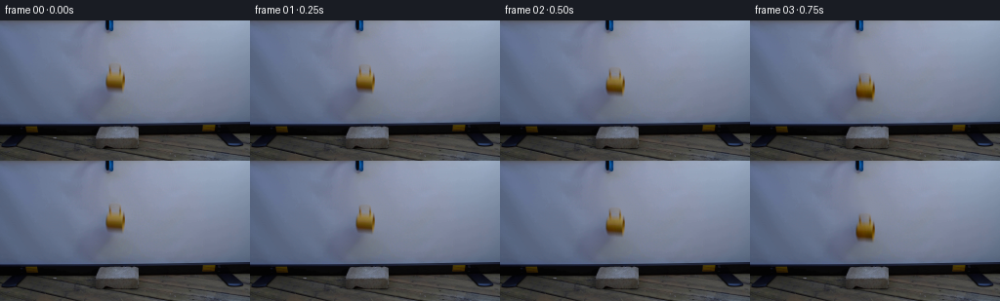
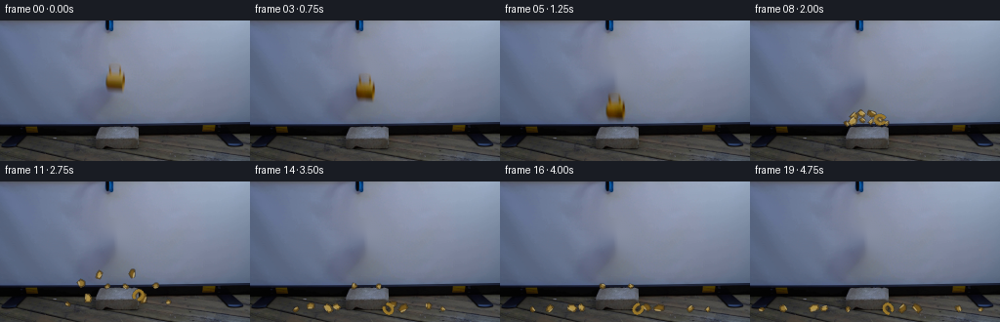
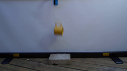
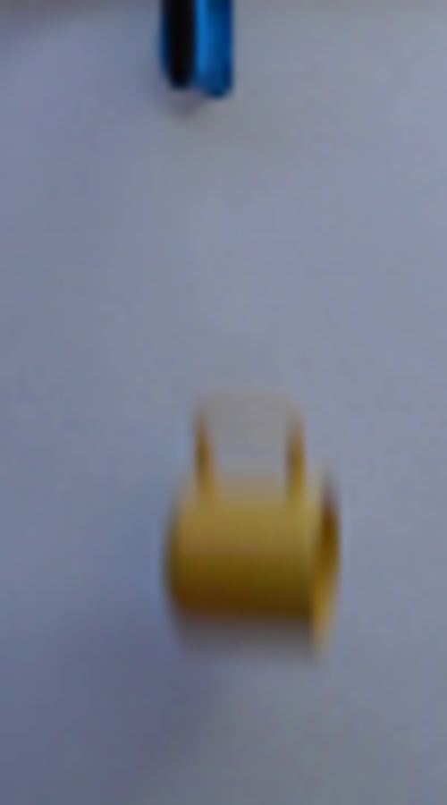
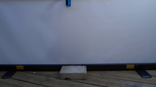
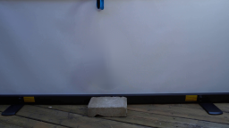
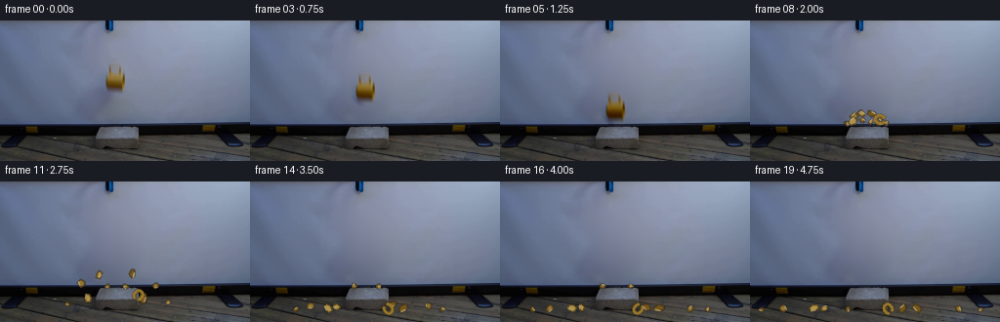
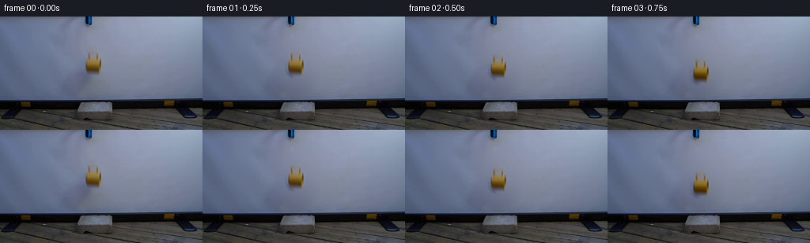

CODING AGENTS AS PIXEL WORLD MODELS
traex/GPT-5.6-Sol · 0125
点击播放 · 原生 RGB 像素
逐轮保存的候选
回放视频、检查图与代码变化。
每份候选均可单独播放。实际图片检查记录在下方工具轨迹中。
候选 01播放与检查图
点击播放 · 原生 RGB 像素


展开代码变化
--- 上一保存版本
+++ 本次保存版本
@@ -0,0 +1,187 @@
+from pathlib import Path
+import math
+import cv2
+import numpy as np
+from PIL import Image
+import artifact_io
+
+CASE_DIR = Path(__file__).resolve().parent
+W, H = 256, 144
+N = 20
+
+
+def smooth_mask(mask, sigma=1.1):
+ m = cv2.GaussianBlur(mask.astype(np.float32), (0, 0), sigma)
+ return np.clip(m, 0.0, 1.0)
+
+
+def overlay_rgba(dst, layer):
+ a = layer[..., 3:4].astype(np.float32) / 255.0
+ dst[:] = np.clip(dst.astype(np.float32) * (1-a) + layer[..., :3].astype(np.float32) * a, 0, 255).astype(np.uint8)
+
+
+def aa_poly(layer, pts, fill, edge=None, edge_width=1):
+ """Small antialiased polygon on an RGBA layer."""
+ pts = np.asarray(pts, np.float32)
+ cv2.fillConvexPoly(layer, np.rint(pts).astype(np.int32), fill, lineType=cv2.LINE_AA)
+ if edge is not None:
+ cv2.polylines(layer, [np.rint(pts).astype(np.int32)], True, edge, edge_width, cv2.LINE_AA)
+
+
+def add_shadow(frame, cx, cy, rx, ry, opacity):
+ yy, xx = np.mgrid[:H, :W]
+ d = ((xx-cx)/max(rx, .1))**2 + ((yy-cy)/max(ry, .1))**2
+ a = np.exp(-2.0*d) * opacity
+ # neutral, diffuse contact shadow
+ frame[:] = np.clip(frame.astype(np.float32) * (1-a[...,None]), 0, 255).astype(np.uint8)
+
+
+def main():
+ src = np.asarray(Image.open(CASE_DIR/'first_frame.png').convert('RGB'), dtype=np.uint8)
+
+ # A clean locked-off plate. Only the small original mug is removed; the grabber,
+ # screen, rail, block and wood remain exactly where photographed.
+ remove = np.zeros((H, W), np.uint8)
+ cv2.ellipse(remove, (118, 59), (15, 20), 0, 0, 360, 255, -1)
+ clean = cv2.inpaint(src, remove, 5, cv2.INPAINT_TELEA)
+ # projection screen is extremely smooth: remove the faint inpaint ring while
+ # retaining the real large-scale illumination gradient.
+ soft = smooth_mask((remove > 0).astype(np.float32), 4.0)[...,None]
+ blur = cv2.GaussianBlur(clean, (0,0), 4.0)
+ clean = np.clip(clean*(1-soft*.30) + blur*(soft*.30), 0, 255).astype(np.uint8)
+
+ # Preserve the photographed, naturally blurred appearance by moving the
+ # foreground's color residual relative to that clean plate.
+ x0,y0,x1,y1 = 102,38,136,80
+ delta = src[y0:y1,x0:x1].astype(np.float32)-clean[y0:y1,x0:x1].astype(np.float32)
+ mag = np.max(np.abs(delta), axis=2)
+ mask = np.clip((mag-2.0)/13.0,0,1)
+ # Confine residual to the photographed mug and its soft optical edge.
+ yy,xx=np.mgrid[y0:y1,x0:x1]
+ spatial=(((xx-118)/15.5)**2+((yy-59)/19.0)**2 < 1.0).astype(np.float32)
+ mask=smooth_mask(mask*spatial, .65)
+ delta *= mask[...,None]
+
+ def put_mug(frame, dx, dy, angle=0.0, strength=1.0, blur_trail=0.0):
+ h,w=delta.shape[:2]
+ M=cv2.getRotationMatrix2D((w/2,h/2), angle, 1.0)
+ moved=cv2.warpAffine(delta, M, (w,h), flags=cv2.INTER_LINEAR,
+ borderMode=cv2.BORDER_CONSTANT, borderValue=0)
+ tx=int(round(x0+dx)); ty=int(round(y0+dy))
+ def stamp(d, yyoff, amount):
+ xa=max(0,tx); ya=max(0,ty+yyoff); xb=min(W,tx+w); yb=min(H,ty+yyoff+h)
+ if xb<=xa or yb<=ya:return
+ sx=xa-tx; sy=ya-(ty+yyoff)
+ patch=frame[ya:yb,xa:xb].astype(np.float32)
+ patch += d[sy:sy+yb-ya,sx:sx+xb-xa]*amount
+ frame[ya:yb,xa:xb]=np.clip(patch,0,255).astype(np.uint8)
+ if blur_trail:
+ stamp(moved, -3, strength*blur_trail)
+ stamp(moved, 0, strength)
+
+ frames=[]
+ # Vertical offsets make the release readable at true constant 4 fps.
+ fall_y=[0,1,4,10,20,30,35]
+ fall_angle=[0,0,0.4,1.0,2.0,3.4,5.2]
+ for i in range(N):
+ if i==0:
+ frames.append(src.copy())
+ continue
+ frame=clean.copy()
+ if i <= 6:
+ dy=fall_y[i]
+ # Increasing speed produces a short, natural photographic motion blur.
+ trail=0.0 if i<3 else min(.20,(fall_y[i]-fall_y[i-1])*.015)
+ put_mug(frame, 0, dy, fall_angle[i], 1.0, trail)
+ # Soft shadow tightens as the mug approaches the concrete block.
+ if i>=4:
+ add_shadow(frame,118,108,11-max(0,i-4)*2,2.2,0.035+0.025*(i-4))
+ if i==6:
+ # Hairline fracture at first contact, restrained to the yellow body.
+ cv2.line(frame,(116,95),(120,101),(54,43,22),1,cv2.LINE_AA)
+ cv2.line(frame,(120,101),(117,106),(58,44,21),1,cv2.LINE_AA)
+ frames.append(frame)
+ continue
+
+ # Shattering begins at frame 7. Simulate ceramic fragments with gravity and
+ # collisions against the brick top and the floor. Fixed values make the
+ # regeneration exact.
+ t=(i-7)/4.0
+ add_shadow(frame,118,109,15,3.0,0.12*math.exp(-t*1.2))
+ layer=np.zeros((H,W,4),np.uint8)
+ pieces=[
+ # x,y, vx,vy, size, angle, angular velocity, tone, catches brick?
+ (114,103,-31,-28,5.8,-18,-95,0,False),
+ (118,102,-17,-36,5.0, 12,110,1,True),
+ (121,103, 14,-38,5.5,-10,105,2,True),
+ (125,104, 34,-27,5.0, 25,135,0,False),
+ (110,105,-20,-15,6.5,-30,-55,1,True),
+ (126,105, 20,-15,6.2, 32, 65,2,True),
+ (116,105, -7,-22,4.0, 5,160,0,True),
+ (122,106, 7,-18,3.6,-12,-145,1,True),
+ (108,106,-39,-10,3.2, 15,180,2,False),
+ (129,106, 43,-12,3.4,-20,-170,1,False),
+ ]
+ colors=[(145,116,50,255),(176,146,71,255),(116,86,27,255)]
+ edge=(78,59,26,220)
+ g=58.0
+ for j,(px,py,vx,vy,size,a0,spin,tone,brick_catch) in enumerate(pieces):
+ x=px+vx*t
+ y=py+vy*t+0.5*g*t*t
+ vy_now=vy+g*t
+ # Simplified first bounce: central pieces hit/settle on the block top;
+ # fast outside pieces continue to the timber floor.
+ ground=108.5 if brick_catch and 97<x<141 else 132.0
+ rad=size*.42
+ if y+rad>ground:
+ hit=max(0.0, (-vy + math.sqrt(max(0,vy*vy+2*g*(ground-rad-py))))/g)
+ if hit<=t:
+ dt=t-hit
+ impact_v=vy+g*hit
+ bounce=-impact_v*(0.23 if brick_catch else 0.30)
+ y=ground-rad + bounce*dt + .5*g*dt*dt
+ if y+rad>ground:
+ y=ground-rad
+ x=(px+vx*hit)+vx*(.58 if brick_catch else .72)*dt
+ angle=math.radians(a0+spin*t)
+ ca,sa=math.cos(angle),math.sin(angle)
+ # Each irregular polygon is a distinct broken shell shard.
+ base=np.array([[-.55,-.36],[.48,-.48],[.62,.16],[.08,.52],[-.58,.30]],np.float32)*size
+ base[:,0]*=(1.0 + (j%3)*.12)
+ R=np.array([[ca,-sa],[sa,ca]])
+ pts=base@R.T+np.array([x,y])
+ aa_poly(layer,pts,colors[tone],edge,1)
+ # glazed highlight on upper edge
+ p1=pts[0]*.65+pts[1]*.35; p2=pts[1]*.75+pts[2]*.25
+ cv2.line(layer,tuple(np.rint(p1).astype(int)),tuple(np.rint(p2).astype(int)),(220,192,120,180),1,cv2.LINE_AA)
+
+ # Curved C-like handle remnant; it separates to the right and comes to rest.
+ hx=129+min(t,.8)*16
+ hy=104-17*t+29*t*t
+ if hy>130: hy=130
+ ang=-25+150*t
+ cv2.ellipse(layer,(int(hx),int(hy)),(5,4),ang,25,315,(151,118,43,255),2,cv2.LINE_AA)
+ cv2.ellipse(layer,(int(hx),int(hy)),(3,2),ang,30,310,(82,64,31,190),1,cv2.LINE_AA)
+
+ overlay_rgba(frame,layer)
+
+ # Fine concrete/ceramic dust: visible only immediately around the strike.
+ if i<=10:
+ dust=np.zeros((H,W,4),np.uint8)
+ age=i-7
+ dust_pts=[(-9,-2,2),(7,-4,2),(-14,0,1),(13,-1,1),(-4,-7,1),(3,-9,1),(18,1,1)]
+ for k,(ox,oy,r) in enumerate(dust_pts):
+ cx=int(118+ox*(1+.20*age)); cy=int(107+oy-age*1.2+age*age*.65)
+ alpha=max(0,70-age*20)
+ cv2.circle(dust,(cx,cy),r+age//2,(171,168,153,alpha),-1,cv2.LINE_AA)
+ overlay_rgba(frame,dust)
+ frames.append(frame)
+
+ arr=np.stack(frames).astype(np.uint8)
+ assert arr.shape==(20,144,256,3)
+ assert np.array_equal(arr[0],src)
+ artifact_io.save(arr, CASE_DIR)
+
+
+if __name__ == '__main__':
+ main()
候选 02播放与检查图
点击播放 · 原生 RGB 像素

展开代码变化
--- 上一保存版本
+++ 本次保存版本
@@ -39,16 +39,25 @@
def main():
src = np.asarray(Image.open(CASE_DIR/'first_frame.png').convert('RGB'), dtype=np.uint8)
- # A clean locked-off plate. Only the small original mug is removed; the grabber,
- # screen, rail, block and wood remain exactly where photographed.
- remove = np.zeros((H, W), np.uint8)
- cv2.ellipse(remove, (118, 59), (15, 20), 0, 0, 360, 255, -1)
- clean = cv2.inpaint(src, remove, 5, cv2.INPAINT_TELEA)
- # projection screen is extremely smooth: remove the faint inpaint ring while
- # retaining the real large-scale illumination gradient.
- soft = smooth_mask((remove > 0).astype(np.float32), 4.0)[...,None]
- blur = cv2.GaussianBlur(clean, (0,0), 4.0)
- clean = np.clip(clean*(1-soft*.30) + blur*(soft*.30), 0, 255).astype(np.uint8)
+ # A clean locked-off plate. Fit the smooth projection-screen lighting around
+ # the photographed mug and its cast shadow, rather than smearing those shapes
+ # with generic inpainting. The static physical set is otherwise untouched.
+ Y, X = np.mgrid[:H, :W]
+ region = (X >= 70) & (X <= 165) & (Y >= 20) & (Y <= 103)
+ exclude = (X >= 97) & (X <= 146) & (Y >= 32) & (Y <= 101)
+ samples = region & ~exclude
+ xn, yn = (X-118)/50.0, (Y-62)/45.0
+ design = np.stack([np.ones_like(xn), xn, yn, xn*xn, xn*yn, yn*yn,
+ xn**3, xn*xn*yn, xn*yn*yn, yn**3], axis=-1)
+ fitted = []
+ for c in range(3):
+ coef = np.linalg.lstsq(design[samples], src[...,c][samples], rcond=None)[0]
+ fitted.append(design @ coef)
+ fitted = np.stack(fitted, axis=-1)
+ plate_mask = np.zeros((H,W), np.uint8)
+ cv2.ellipse(plate_mask, (120,65), (28,37), 0, 0, 360, 255, -1)
+ plate_alpha = cv2.GaussianBlur(plate_mask.astype(np.float32)/255.0,(0,0),4)[...,None]
+ clean = np.clip(src*(1-plate_alpha)+fitted*plate_alpha,0,255).astype(np.uint8)
# Preserve the photographed, naturally blurred appearance by moving the
# foreground's color residual relative to that clean plate.
候选 03播放与检查图

候选 04播放与检查图
点击播放 · 原生 RGB 像素
展开代码变化
--- 上一保存版本
+++ 本次保存版本
@@ -62,7 +62,8 @@
# Preserve the photographed, naturally blurred appearance by moving the
# foreground's color residual relative to that clean plate.
x0,y0,x1,y1 = 102,38,136,80
- delta = src[y0:y1,x0:x1].astype(np.float32)-clean[y0:y1,x0:x1].astype(np.float32)
+ # Estimate the compact object residual against the local fitted plate.
+ delta = src[y0:y1,x0:x1].astype(np.float32)-fitted[y0:y1,x0:x1].astype(np.float32)
mag = np.max(np.abs(delta), axis=2)
mask = np.clip((mag-2.0)/13.0,0,1)
# Confine residual to the photographed mug and its soft optical edge.
可观测工具轨迹
实际执行的命令与返回图片。
命令 1exit 0
/bin/bash -lc "cat prompt.txt && printf '\\n---RULES---\\n' && cat GENERATION_RULES.md"
命令 2exit 1
/bin/bash -lc "find . -maxdepth 2 -type f -printf '%p\\n' | sort && printf '\\n--- tools ---\\n' && command -v ffmpeg && command -v python3"
命令 3exit 0
/bin/bash -lc "python3 - <<'PY' import importlib for m in ['numpy','PIL','cv2','scipy','skimage','imageio']: try: x=importlib.import_module(m); print(m, 'ok', getattr(x,'__version__','')) except Exception as e: print(m,e) PY sed -n '1,240p' artifact_io.py"
命令 4exit 0
/bin/bash -lc "mkdir -p .tmp && python3 - <<'PY'
from PIL import Image
im=Image.open('first_frame.png')
im.resize((1024,576)).save('.tmp/up.png')
im.crop((90,0,140,90)).resize((500,900)).save('.tmp/crop.png')
PY"命令 5exit 0
/bin/bash -lc "python3 - <<'PY'
from PIL import Image
import numpy as np, cv2
im=np.array(Image.open('first_frame.png').convert('RGB'))
for y in range(35,82):
# print unusual yellow pixels
xs=[]
for x in range(90,145):
r,g,b=map(int,im[y,x])
if r>g*1.1 and g>b*1.3 and r>80: xs.append(x)
if xs: print(y,min(xs),max(xs),len(xs), np.mean(im[y,xs],0).round(0))
PY"命令 6exit 0
/bin/bash -lc "cat > generate.py <<'PY'
from pathlib import Path
import math
import cv2
import numpy as np
from PIL import Image
import artifact_io
CASE_DIR = Path(__file__).resolve().parent
W, H = 256, 144
N = 20
def smooth_mask(mask, sigma=1.1):
m = cv2.GaussianBlur(mask.astype(np.float32), (0, 0), sigma)
return np.clip(m, 0.0, 1.0)
def overlay_rgba(dst, layer):
a = layer[..., 3:4].astype(np.float32) / 255.0
dst[:] = np.clip(dst.astype(np.float32) * (1-a) + layer[..., :3].astype(np.float32) * a, 0, 255).astype(np.uint8)
def aa_poly(layer, pts, fill, edge=None, edge_width=1):
\"\"\"Small antialiased polygon on an RGBA layer.\"\"\"
pts = np.asarray(pts, np.float32)
cv2.fillConvexPoly(layer, np.rint(pts).astype(np.int32), fill, lineType=cv2.LINE_AA)
if edge is not None:
cv2.polylines(layer, [np.rint(pts).astype(np.int32)], True, edge, edge_width, cv2.LINE_AA)
def add_shadow(frame, cx, cy, rx, ry, opacity):
yy, xx = np.mgrid[:H, :W]
d = ((xx-cx)/max(rx, .1))**2 + ((yy-cy)/max(ry, .1))**2
a = np.exp(-2.0*d) * opacity
# neutral, diffuse contact shadow
frame[:] = np.clip(frame.astype(np.float32) * (1-a[...,None]), 0, 255).astype(np.uint8)
def main():
src = np.asarray(Image.open(CASE_DIR/'first_frame.png').convert('RGB'), dtype=np.uint8)
# A clean locked-off plate. Only the small original mug is removed; the grabber,
# screen, rail, block and wood remain exactly where photographed.
remove = np.zeros((H, W), np.uint8)
cv2.ellipse(remove, (118, 59), (15, 20), 0, 0, 360, 255, -1)
clean = cv2.inpaint(src, remove, 5, cv2.INPAINT_TELEA)
# projection screen is extremely smooth: remove the faint inpaint ring while
# retaining the real large-scale illumination gradient.
soft = smooth_mask((remove > 0).astype(np.float32), 4.0)[...,None]
blur = cv2.GaussianBlur(clean, (0,0), 4.0)
clean = np.clip(clean*(1-soft*.30) + blur*(soft*.30), 0, 255).astype(np.uint8)
# Preserve the photographed, naturally blurred appearance by moving the
# foreground's color residual relative to that clean plate.
x0,y0,x1,y1 = 102,38,136,80
delta = src[y0:y1,x0:x1].astype(np.float32)-clean[y0:y1,x0:x1].astype(np.float32)
mag = np.max(np.abs(delta), axis=2)
mask = np.clip((mag-2.0)/13.0,0,1)
# Confine residual to the photographed mug and its soft optical edge.
yy,xx=np.mgrid[y0:y1,x0:x1]
spatial=(((xx-118)/15.5)**2+((yy-59)/19.0)**2 < 1.0).astype(np.float32)
mask=smooth_mask(mask*spatial, .65)
delta *= mask[...,None]
def put_mug(frame, dx, dy, angle=0.0, strength=1.0, blur_trail=0.0):
h,w=delta.shape[:2]
M=cv2.getRotationMatrix2D((w/2,h/2), angle, 1.0)
moved=cv2.warpAffine(delta, M, (w,h), flags=cv2.INTER_LINEAR,
borderMode=cv2.BORDER_CONSTANT, borderValue=0)
tx=int(round(x0+dx)); ty=int(round(y0+dy))
def stamp(d, yyoff, amount):
xa=max(0,tx); ya=max(0,ty+yyoff); xb=min(W,tx+w); yb=min(H,ty+yyoff+h)
if xb<=xa or yb<=ya:return
sx=xa-tx; sy=ya-(ty+yyoff)
patch=frame[ya:yb,xa:xb].astype(np.float32)
patch += d[sy:sy+yb-ya,sx:sx+xb-xa]*amount
frame[ya:yb,xa:xb]=np.clip(patch,0,255).astype(np.uint8)
if blur_trail:
stamp(moved, -3, strength*blur_trail)
stamp(moved, 0, strength)
frames=[]
# Vertical offsets make the release readable at true constant 4 fps.
fall_y=[0,1,4,10,20,30,35]
fall_angle=[0,0,0.4,1.0,2.0,3.4,5.2]
for i in range(N):
if i==0:
frames.append(src.copy())
continue
frame=clean.copy()
if i <= 6:
dy=fall_y[i]
# Increasing speed produces a short, natural photographic motion blur.
trail=0.0 if i<3 else min(.20,(fall_y[i]-fall_y[i-1])*.015)
put_mug(frame, 0, dy, fall_angle[i], 1.0, trail)
# Soft shadow tightens as the mug approaches the concrete block.
if i>=4:
add_shadow(frame,118,108,11-max(0,i-4)*2,2.2,0.035+0.025*(i-4))
if i==6:
# Hairline fracture at first contact, restrained to the yellow body.
cv2.line(frame,(116,95),(120,101),(54,43,22),1,cv2.LINE_AA)
cv2.line(frame,(120,101),(117,106),(58,44,21),1,cv2.LINE_AA)
frames.append(frame)
continue
# Shattering begins at frame 7. Simulate ceramic fragments with gravity and
# collisions against the brick top and the floor. Fixed values make the
# regeneration exact.
t=(i-7)/4.0
add_shadow(frame,118,109,15,3.0,0.12*math.exp(-t*1.2))
layer=np.zeros((H,W,4),np.uint8)
pieces=[
# x,y, vx,vy, size, angle, angular velocity, tone, catches brick?
(114,103,-31,-28,5.8,-18,-95,0,False),
(118,102,-17,-36,5.0, 12,110,1,True),
(121,103, 14,-38,5.5,-10,105,2,True),
(125,104, 34,-27,5.0, 25,135,0,False),
(110,105,-20,-15,6.5,-30,-55,1,True),
(126,105, 20,-15,6.2, 32, 65,2,True),
(116,105, -7,-22,4.0, 5,160,0,True),
(122,106, 7,-18,3.6,-12,-145,1,True),
(108,106,-39,-10,3.2, 15,180,2,False),
(129,106, 43,-12,3.4,-20,-170,1,False),
]
colors=[(145,116,50,255),(176,146,71,255),(116,86,27,255)]
edge=(78,59,26,220)
g=58.0
for j,(px,py,vx,vy,size,a0,spin,tone,brick_catch) in enumerate(pieces):
x=px+vx*t
y=py+vy*t+0.5*g*t*t
vy_now=vy+g*t
# Simplified first bounce: central pieces hit/settle on the block top;
# fast outside pieces continue to the timber floor.
ground=108.5 if brick_catch and 97<x<141 else 132.0
rad=size*.42
if y+rad>ground:
hit=max(0.0, (-vy + math.sqrt(max(0,vy*vy+2*g*(ground-rad-py))))/g)
if hit<=t:
dt=t-hit
impact_v=vy+g*hit
bounce=-impact_v*(0.23 if brick_catch else 0.30)
y=ground-rad + bounce*dt + .5*g*dt*dt
if y+rad>ground:
y=ground-rad
x=(px+vx*hit)+vx*(.58 if brick_catch else .72)*dt
angle=math.radians(a0+spin*t)
ca,sa=math.cos(angle),math.sin(angle)
# Each irregular polygon is a distinct broken shell shard.
base=np.array([[-.55,-.36],[.48,-.48],[.62,.16],[.08,.52],[-.58,.30]],np.float32)*size
base[:,0]*=(1.0 + (j%3)*.12)
R=np.array([[ca,-sa],[sa,ca]])
pts=base@R.T+np.array([x,y])
aa_poly(layer,pts,colors[tone],edge,1)
# glazed highlight on upper edge
p1=pts[0]*.65+pts[1]*.35; p2=pts[1]*.75+pts[2]*.25
cv2.line(layer,tuple(np.rint(p1).astype(int)),tuple(np.rint(p2).astype(int)),(220,192,120,180),1,cv2.LINE_AA)
# Curved C-like handle remnant; it separates to the right and comes to rest.
hx=129+min(t,.8)*16
hy=104-17*t+29*t*t
if hy>130: hy=130
ang=-25+150*t
cv2.ellipse(layer,(int(hx),int(hy)),(5,4),ang,25,315,(151,118,43,255),2,cv2.LINE_AA)
cv2.ellipse(layer,(int(hx),int(hy)),(3,2),ang,30,310,(82,64,31,190),1,cv2.LINE_AA)
overlay_rgba(frame,layer)
# Fine concrete/ceramic dust: visible only immediately around the strike.
if i<=10:
dust=np.zeros((H,W,4),np.uint8)
age=i-7
dust_pts=[(-9,-2,2),(7,-4,2),(-14,0,1),(13,-1,1),(-4,-7,1),(3,-9,1),(18,1,1)]
for k,(ox,oy,r) in enumerate(dust_pts):
cx=int(118+ox*(1+.20*age)); cy=int(107+oy-age*1.2+age*age*.65)
alpha=max(0,70-age*20)
cv2.circle(dust,(cx,cy),r+age//2,(171,168,153,alpha),-1,cv2.LINE_AA)
overlay_rgba(frame,dust)
frames.append(frame)
arr=np.stack(frames).astype(np.uint8)
assert arr.shape==(20,144,256,3)
assert np.array_equal(arr[0],src)
artifact_io.save(arr, CASE_DIR)
if __name__ == '__main__':
main()
PY
python3 generate.py
python3 - <<'PY'
from PIL import Image
import numpy as np
im=np.array(Image.open('first_frame.png').convert('RGB'))
f=np.array(Image.open('frames/00.png').convert('RGB'))
print('frame0 exact',np.array_equal(im,f),'shape',f.shape)
PY"命令 7exit 0
/bin/bash -lc "python3 - <<'PY'
import cv2, numpy as np
from PIL import Image
im=np.array(Image.open('first_frame.png').convert('RGB'))
h,w=im.shape[:2]
Y,X=np.mgrid[:h,:w]
# model only projection field x 70:165 y 20:104, use excluding broad mug/shadow rectangle
region=(X>=70)&(X<=165)&(Y>=20)&(Y<=103)
exclude=(X>=97)&(X<=146)&(Y>=32)&(Y<=101)
sel=region&~exclude
# coordinates centered and normalized, polynomial 4 terms x/y
xn=(X-118)/50; yn=(Y-62)/45
A=np.stack([np.ones_like(xn),xn,yn,xn*xn,xn*yn,yn*yn,xn**3,xn*xn*yn,xn*yn*yn,yn**3],-1)
coef=[]
for c in range(3): coef.append(np.linalg.lstsq(A[sel],im[...,c][sel],rcond=None)[0])
pred=np.stack([A@co for co in coef],-1)
# blend ellipse broad; only screen
mask=np.zeros((h,w),np.uint8);cv2.ellipse(mask,(120,65),(28,37),0,0,360,255,-1)
a=cv2.GaussianBlur(mask.astype(float)/255,(0,0),4)[...,None]
out=np.clip(im*(1-a)+pred*a,0,255).astype('uint8')
Image.fromarray(out).save('.tmp/poly.png')
# Larger inpaint variants
for rad in [3,7,12]:
m=np.zeros((h,w),np.uint8);cv2.ellipse(m,(120,65),(27,35),0,0,360,255,-1)
o=cv2.inpaint(im,m,rad,cv2.INPAINT_TELEA)
Image.fromarray(o).save(f'.tmp/in{rad}.png')
PY"命令 8exit 0
/bin/bash -lc "python3 - <<'PY'
p='generate.py'
s=open(p).read()
start=s.index(' # A clean locked-off plate.')
end=s.index(' # Preserve the photographed',start)
new=''' # A clean locked-off plate. Fit the smooth projection-screen lighting around\\n # the photographed mug and its cast shadow, rather than smearing those shapes\\n # with generic inpainting. The static physical set is otherwise untouched.\\n Y, X = np.mgrid[:H, :W]\\n region = (X >= 70) & (X <= 165) & (Y >= 20) & (Y <= 103)\\n exclude = (X >= 97) & (X <= 146) & (Y >= 32) & (Y <= 101)\\n samples = region & ~exclude\\n xn, yn = (X-118)/50.0, (Y-62)/45.0\\n design = np.stack([np.ones_like(xn), xn, yn, xn*xn, xn*yn, yn*yn,\\n xn**3, xn*xn*yn, xn*yn*yn, yn**3], axis=-1)\\n fitted = []\\n for c in range(3):\\n coef = np.linalg.lstsq(design[samples], src[...,c][samples], rcond=None)[0]\\n fitted.append(design @ coef)\\n fitted = np.stack(fitted, axis=-1)\\n plate_mask = np.zeros((H,W), np.uint8)\\n cv2.ellipse(plate_mask, (120,65), (28,37), 0, 0, 360, 255, -1)\\n plate_alpha = cv2.GaussianBlur(plate_mask.astype(np.float32)/255.0,(0,0),4)[...,None]\\n clean = np.clip(src*(1-plate_alpha)+fitted*plate_alpha,0,255).astype(np.uint8)\\n\\n'''
s=s[:start]+new+s[end:]
open(p,'w').write(s)
PY
python3 generate.py"命令 9exit 0
/bin/bash -lc "python3 - <<'PY'
p='generate.py';s=open(p).read()
s=s.replace(\" delta = src[y0:y1,x0:x1].astype(np.float32)-clean[y0:y1,x0:x1].astype(np.float32)\\n mag =\", \" # Estimate the compact object residual against the local fitted plate.\\n delta = src[y0:y1,x0:x1].astype(np.float32)-fitted[y0:y1,x0:x1].astype(np.float32)\\n mag =\")
open(p,'w').write(s)
PY
python3 generate.py
python3 - <<'PY'
from pathlib import Path
from PIL import Image
import numpy as np
f=np.stack([np.array(Image.open(f'frames/{i:02d}.png').convert('RGB')) for i in range(20)])
s=np.array(Image.open('first_frame.png').convert('RGB'))
print(f.shape,f.dtype,'f0_exact',np.array_equal(f[0],s),'range',f.min(),f.max(),'files',Path('pixels.npz').stat().st_size)
# approximate activity boxes
for i in [1,3,5,7,10,15,19]:
d=np.max(abs(f[i].astype(int)-f[max(0,i-1)].astype(int)),2)
ys,xs=np.where(d>8)
print(i, len(xs), None if len(xs)==0 else (xs.min(),ys.min(),xs.max(),ys.max()))
PY"视觉工具实际返回图片 1

视觉工具实际返回图片 2

视觉工具实际返回图片 3

视觉工具实际返回图片 4

视觉工具实际返回图片 5

视觉工具实际返回图片 6

视觉工具实际返回图片 7

视觉工具实际返回图片 8

保存候选 4 份；完成命令 9 次；可验证图片返回 8 张。原始 API 响应与完整日志保留在本地。